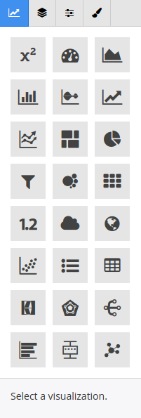

Create Your Own Widgets¶
The widget editor is where you will create the building blocks of your dashboard.
To begin creating a new widget, click on the new widget button:
There are two entry points to begin creating a widget:
- You can start by choosing the Dimension or Metric you wish to visualize, or
- You can start by choosing the Visualization type you want to use.
Visualizations¶
Each visualization supports certain combinations of data types. By selecting a viz first, your available dimensions and metrics will be highlighted.
Options¶
The options tab will change based on your current visualization.
This is where you can do aggregations, sorting, filtering, and other operations on the data you’ve selected.
Widget-specific options will also be here, such as the style of map on a geographical widget.
Color¶
The color tab lets you choose what conditions to color the visualization on.
Select the dimension or metric you want to separate by color, and then choose a method.
Options are:
- Single Color
- Gradient Color (diverging colors based on a range of metrics)
- Palette (pick a color for each dimension)
- Range Palette (pack a color for a range of metrics)
Font¶
If there is text in your widget, you can specify a custom font in the font tab
Style¶
The style of an individual widget can be changed here. This will override any customizations on style you’ve made at the dashboard level.
To see how to change style at the dashboard level, see the Dashboard Styles page.